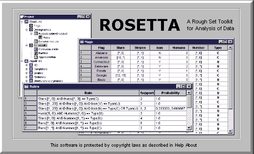
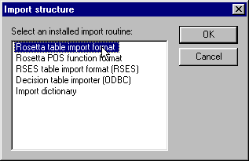
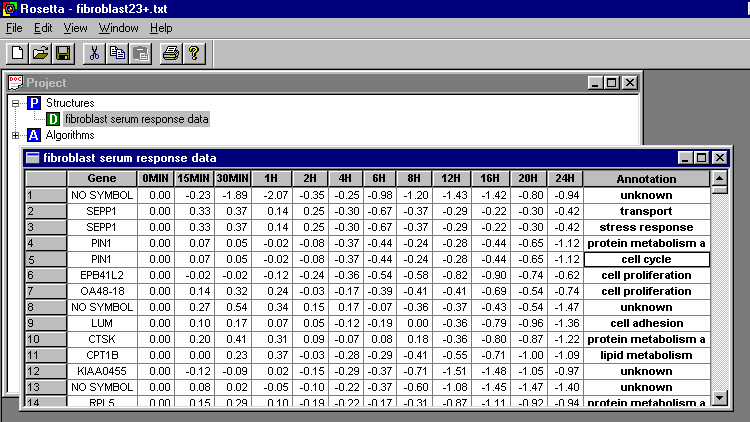
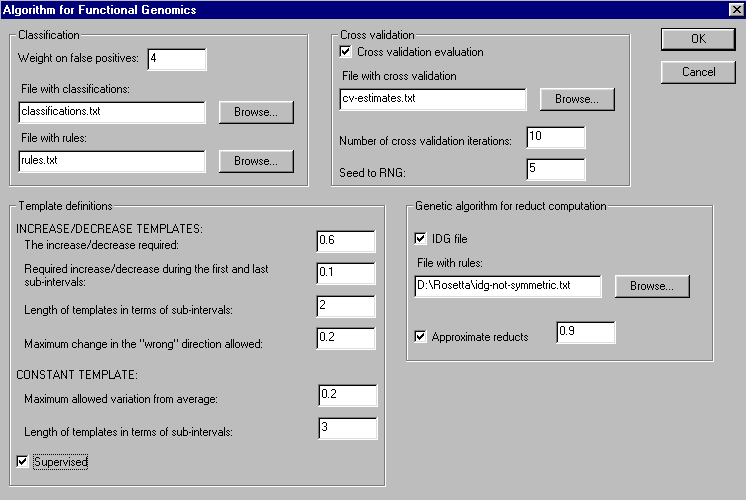
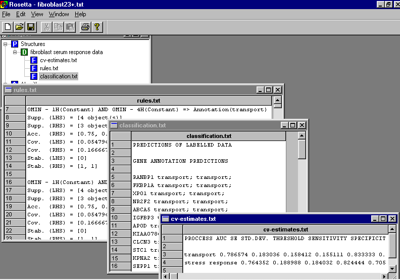

The new package requires that the data is stored in a table where the first column is a unique identifier for each gene (e.g. gene symbol), while the last column is annotations. The intermediate columns contain the log-transformed expression level measured at each time point:
Gene 0MIN 15MIN 30MIN
1H 2H 4H 6H 8H 12H 16H 20H 24H Annotation
String float(2) float(2)
float(2) float(2) float(2) float(2) float(2) float(2) float(2) float(2)
float(2) float(2) String
"NO SYMBOL" 0.00 -0.235
-1.895 -2.065 -0.35 -0.245 -0.98 -1.195 -1.435 -1.42 -0.8 -0.94 "unknown"
"SEPP1" 0.00 0.33 0.365
0.135 0.245 -0.3 -0.67 -0.37 -0.29 -0.22 -0.3 -0.42 "transport"
"SEPP1" 0.00 0.33 0.365
0.135 0.245 -0.3 -0.67 -0.37 -0.29 -0.22 -0.3 -0.42 "stress response"
"PIN1" 0.00 0.07 0.05
-0.02 -0.075 -0.365 -0.44 -0.24 -0.28 -0.435 -0.65 -1.12 "protein metabolism
and modification"
"PIN1" 0.00 0.07 0.05
-0.02 -0.075 -0.365 -0.44 -0.24 -0.28 -0.435 -0.65 -1.12 "cell cycle"
"EPB41L2" 0.00 -0.02
-0.02 -0.115 -0.24 -0.36 -0.535 -0.58 -0.825 -0.9 -0.735 -0.62 "cell proliferation"
"OA48-18" 0.00 0.14 0.325
0.24 -0.03 -0.175 -0.39 -0.415 -0.405 -0.685 -0.54 -0.74 "cell proliferation"
"NO SYMBOL" 0.00 0.27
0.535 0.345 0.15 0.17 -0.07 -0.36 -0.37 -0.425 -0.535 -1.47 "unknown"
...
Note that the first two rows contains column name and column type respectively. Genes with multiple annotations are stored using several rows, one for each annotation (see SEPP1 and PIN1). Genes with unknown function has annotation "unknown".
The data is loaded into Rosetta by using "Rosetta table import format" as shown below:

Rosetta enables the user to browse the data and perform other operations such as deleting or hiding rows and columns:

To perform modelling and classification on the data, simply right click the data icon in the project and choose "Algorithm for Functional Genomics". The following menu will appear:

The menu lets the user choose the most important parameters in the methodology. Refer the main page for more information on the methodology. The algorithm outputs classifications for unknown genes, (re)classifications for known genes, rules used to classify the unknown genes and cross validation estimates for the quality of the classifications:
